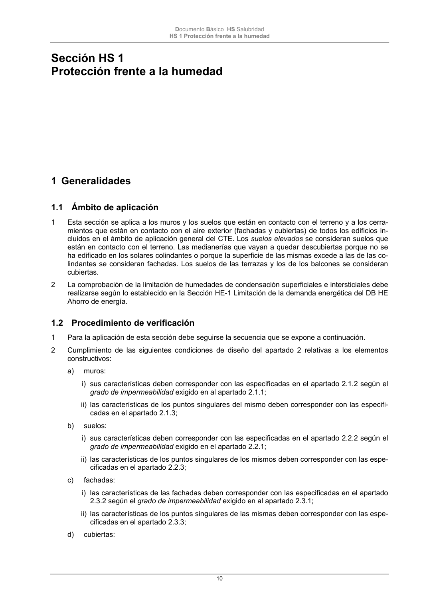

DB-HS Salubridad · edición 2022-06-14 · capa oficial
Documento DB-HS-oficial · SHA-256 del PDF 68df3caacc95f71aee2ec1ba7b2c65ae66155c21e3a8785521b8fdd4fd640d3b
Copia fiel del PDF fuente · Fuente oficial
Ficha de la disposición en la fuente oficial
Formatos: JSON del segmento · Markdown
1 Generalidades 1.1 Ámbito de aplicación 1.1 Ámbito de aplicación 1 Esta sección se aplica a los muros y los suelos que están en contacto con el terreno y a los cerra- mientos que están en contacto con el aire exterior (fachadas y cubiertas) de todos los edificios in- cluidos en el ámbito de aplicación general del CTE. Los suelos elevados se consideran suelos que están en contacto con el terreno. Las medianerías que vayan a quedar descubiertas porque no se ha edificado en los solares colindantes o porque la superficie de las mismas excede a las de las co- lindantes se consideran fachadas. Los suelos de las terrazas y los de los balcones se consideran cubiertas. 2 La comprobación de la limitación de humedades de condensación superficiales e intersticiales debe realizarse según lo establecido en la Sección HE-1 Limitación de la demanda energética del DB HE Ahorro de energía.
